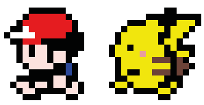
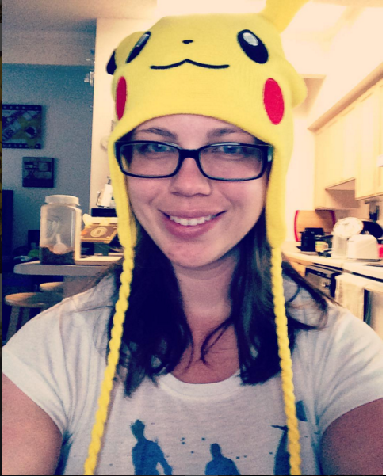
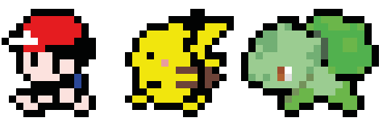
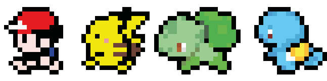
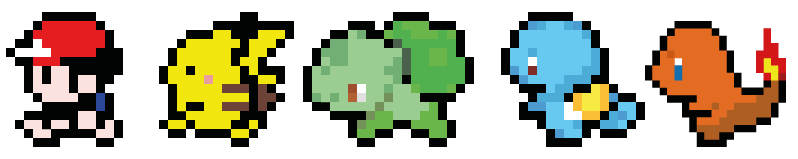
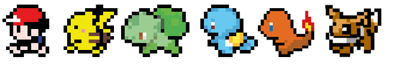

About Me
______________________________________________________

Originally from upstate New York, I moved to Colorado only about a year ago
for a new adventure in my life. I went though a lot of different trials in search
of finding what I wanted to do for a living until I came across coding.
I am the type of person who constantly wants to be challenged and to continue
learning new things. So, when I learned about
Galvanize's Full Stack Program
and became a part of the program, it was instantly a perfect fit.
I love coding and love to be creative with it. I am eager to start the
next adventure in my life as a full stack web developer!
Projects
___________________________________________________
Skills
________________________________________________
Git || Github || Bootstrap || JQuery || Node.JS
Express || SQL || Knex.JS
Other Skills
____________________________________________

Some other skills that I bring to the table include a strong sense of
design with experience in both Photoshop and Final Cut Pro. I also have a strong marketing background
(both offline and online) in which I've helped design several different marketing plans for a wide
range of non-profit organizations. Please refer to my
resume for more details.
Creative || Marketer || Advertiser || Designer
Contact
______________________________________